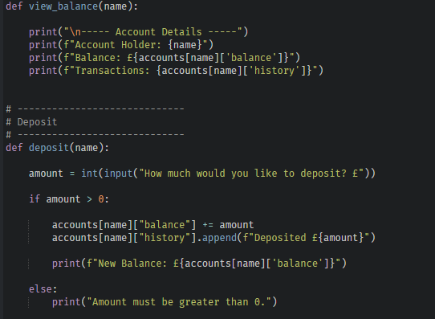
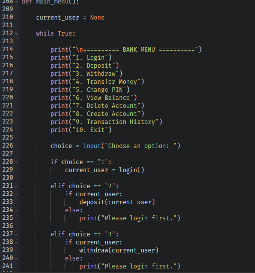
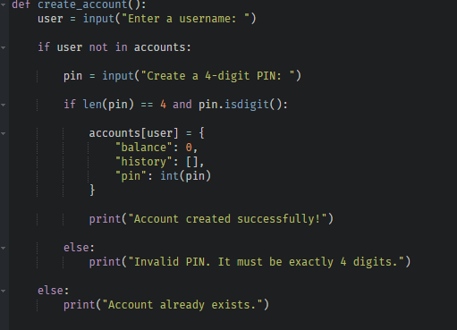

Project Overview
📂 Projects
3 Major Projects
💻 Languages
Python
HTML
CSS
🛠 Technologies
GitHub
Visual Studio Code
🎯 Goal
Software & Data Apprenticeship
Featured Projects
These projects demonstrate my practical programming and web development skills. Each one has helped improve my logical thinking, debugging abilities and understanding of software development principles.
Portfolio Website
A fully responsive portfolio website designed and developed using HTML and CSS. The website showcases my coursework, projects, technical skills, CV and achievements in a professional format. Building this portfolio improved my understanding of page layouts, responsive web design, navigation and organising large websites for real users.
View Website
Student Grade Manager
A console-based Python application that allows users to add students, record grades, calculate averages and remove records through an interactive menu system. Developing this project strengthened my understanding of functions, dictionaries, lists, loops, validation and problem solving while creating a practical data management application.
GitHub
Bank Account Simulator
The Bank Account Simulator is my most advanced Python project so far. The application allows users to create secure bank accounts, log in using a PIN, deposit and withdraw money, transfer funds between users, change their PIN, view account balances and review transaction history. Developing this project significantly improved my understanding of nested dictionaries, reusable functions, user authentication, input validation and larger menu-driven applications.
GitHubStudent Grade Manager
The Student Grade Manager was my first larger Python project and introduced me to designing complete console applications. The program allows users to create student records, add grades, calculate averages and remove students using an interactive menu system. Throughout development I learned how to break a larger problem into smaller reusable functions while improving my debugging and logical thinking skills.
📚 Dictionaries
Used dictionaries to store student names and their grades.
📝 Lists
Stored multiple grades for every student.
⚙ Functions
Separated every feature into reusable functions.
🧠 Problem Solving
Developed logical thinking by solving programming problems.
Bank Account Simulator
After completing the Student Grade Manager, I challenged myself to build a much larger Python application. The Bank Account Simulator demonstrates my ability to build a secure, menu-driven system using functions, nested dictionaries, lists and input validation. The project includes account creation, PIN authentication, deposits, withdrawals, money transfers, transaction history and account deletion. Compared with my previous project, this application contains more functions, more complex data structures and stronger validation, making it my most advanced Python project so far.
Application Walkthrough
The screenshots below demonstrate some of the key features included within my Bank Account Simulator. Each feature was developed individually before being tested and integrated into the final application.

Main Menu
The main menu acts as the navigation hub for the entire application. From this menu users can log into an existing account, create a new account, deposit money, withdraw funds, transfer money, change their PIN, view their balance, display their transaction history and delete an account. Creating this menu improved my understanding of loops, selection statements and organising larger Python programs using reusable functions.

Create Account
The Create Account feature enables new users to register their own bank account by entering a username and creating a secure four-digit PIN. Each account is stored inside a nested dictionary containing the user's balance, transaction history and PIN. While developing this feature I learned how nested dictionaries can organise complex data while validation helps prevent duplicate usernames and invalid PINs.
View Balance & Deposit
After successfully logging in, users can securely deposit money into their account and immediately view their updated balance. Every deposit is automatically recorded in the transaction history, allowing users to keep track of all activity on their account. Developing this feature strengthened my understanding of updating nested dictionaries, modifying lists and creating functions that work together to manage data accurately.
Technologies Used
Throughout these projects I developed practical experience using a range of programming languages and development tools. Each technology helped me improve different aspects of software development, from designing websites to building larger Python applications.
🐍 Python
Used to develop console-based applications including the Student Grade Manager and the Bank Account Simulator.
🌐 HTML & CSS
Used to design and build this responsive portfolio website from scratch.
💻 Visual Studio Code
Used as my primary code editor when developing Python and web development projects.
📂 GitHub
Used to manage my projects, practise version control and publish my work online for employers to view.
What I Learned
Completing these projects has significantly improved my confidence in software development. I strengthened my understanding of Python programming, functions, loops, dictionaries, nested dictionaries, selection, iteration and problem solving while also learning how to organise larger applications into reusable functions. Developing my portfolio website also improved my HTML and CSS skills, helping me create responsive layouts and present my work professionally. Each project challenged me to debug logical errors, improve the user experience and continuously refine my code through testing.
Skills Demonstrated
Python Programming — 90%
Problem Solving — 90%
Debugging — 85%
HTML & CSS — 85%
Portfolio Website
Alongside my Python development, I designed and built this portfolio website using HTML and CSS to professionally showcase my coursework, projects, technical skills and CV. The website includes responsive layouts, navigation between pages and links to my GitHub repositories. Creating this site has helped me improve my understanding of web design, page structure and presenting my work in a professional manner.
BTEC Coursework
My BTEC Information Technology course has provided me with a strong understanding of computer systems, software development, spreadsheets, networking, cybersecurity and website development. The units below demonstrate the knowledge and practical skills I have developed throughout the course.
Currently Learning
🐍 Advanced Python
Continuing to develop larger applications while improving my understanding of software development principles.
📂 Git & GitHub
Using GitHub to manage projects, publish code and build a professional software development portfolio.
🌐 Web Development
Improving my HTML and CSS skills by expanding and refining my portfolio website.
🚀 Software Development
Building increasingly complex projects to prepare for a Software & Data Apprenticeship.